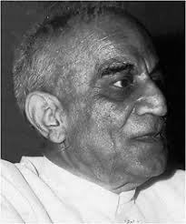

Advocate — Supreme Court of India & Delhi High Court
Committed to the pursuit of justice, constitutional values, and the rule of law.
Learn More
Pandit Kanhaiya Lal Misra
Former Advocate General of Uttar Pradesh
Much of how I think about the law — and how I try to show up in court — began with stories told by my late grandfather, Rama Shankar Misra. In Allahabad, Pandit Kanhaiya Lal Misra, former Advocate General of Uttar Pradesh, served as his local guardian. For my grandfather, he was not a distant public figure, but a steady presence in daily life whose standards of conduct stayed with him for decades.
Growing up, I heard stories of Pandit Kanhaiya Lal Misra's presence of mind under pressure, his command of court craft, the care and steadiness with which he handled clients, and the depth of his reading habits. Those memories didn't come across as grand speeches; they sounded like reminders that good advocacy rests on preparation, composure, and respect for the process. Carrying that inspiration forward is something I value deeply in my own work.
Advocate, Supreme Court of India & Delhi High Court
Kishlaya Mishra is a practising advocate before the Supreme Court of India and the Delhi High Court. An alumnus of the KIIT School of Law (Batch of 2020), he brings a rigorous academic foundation and a deep commitment to constitutional principles to his legal practice.
During his formative years, Mr. Mishra had the privilege of interning at the Office of the then Attorney General for India, Shri. K.K. Venugopal, Solicitor General for India, Shri. Tushar Mehta, Former Union Cabinet Minister and Senior Advocate Shri. Salman Khurshid. Apart from this, while interning in the Institute of Legislative Drafting & Research, Legislative Department, Ministry of Law & Justice (Union of India), Mr. Mishra gained insights into the nitty-gritty of legislative drafting and the way government handles litigation, which continues to shape his legal strategy.
His practice spans a wide range of legal disciplines, with a particular emphasis on constitutional law, civil and commercial litigation, criminal matters, and public law. He is known for his analytical rigour, clarity of thought, and steadfast dedication to his clients' causes.
Mr. Mishra is also an active contributor to legal scholarship and public discourse, having authored opinion pieces on constitutional democracy and governance in leading publications.
Writ petitions, fundamental rights litigation, and matters concerning the interpretation of the Constitution of India before the Supreme Court and High Courts.
Comprehensive representation in civil suits, contractual disputes, property matters, recovery proceedings, and commercial arbitration.
Defence and prosecution in criminal trials, bail applications, quashing petitions, and appeals before trial courts, High Courts, and the Supreme Court.
Advisory and litigation practice in matters of public interest, administrative law, regulatory frameworks, and governance-related disputes.
Matters relating to government service, departmental proceedings, employment disputes, and labour law before tribunals and courts.
Special Leave Petitions, civil and criminal appeals, and revision petitions before the Supreme Court and High Courts.
Published in The Daily Pioneer
An incisive analysis of the Supreme Court's decision to put the controversial UGC Regulation in abeyance, examining how equity regulations may create unintended discriminatory effects and the need for a committee of eminent jurists to revisit the framework.
Published in The Daily Guardian and The Business Guardian
A critical examination of the implications of policy decision-making on constitutional principles, contributing to contemporary public discourse on constitutional democracy and governance in India.
Published in The Daily Guardian
Written on the eve of Constitution Day, marking 75 years since India adopted its Constitution, the piece examines how the constitutional fabric has been tested over the decades and calls for a renewed commitment to its foundational values.
Published in The Daily Pioneer (co-authored with Trisha Shreyashi)
An examination of the conflict between the judiciary and the executive over judicial appointments, advocating for a reformed collegium mechanism that evolves and upgrades itself in keeping with the demands of modern governance.
Chamber of Kishlaya Mishra
1302, Nirmal Tower, Barakhamba Road,
New Delhi (110001)